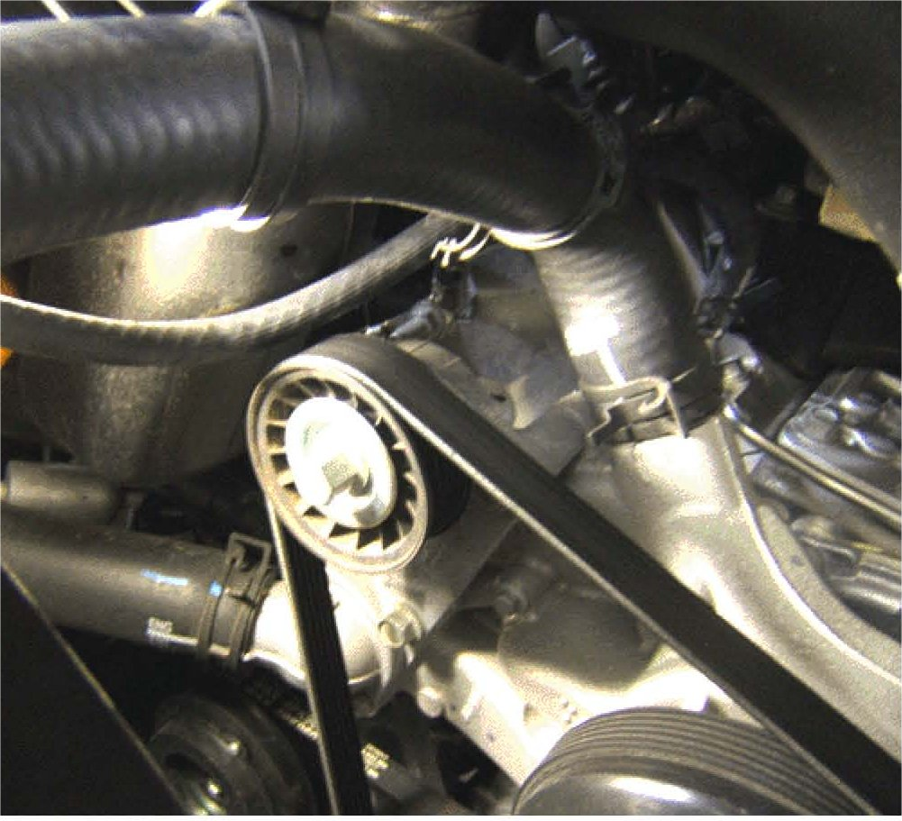
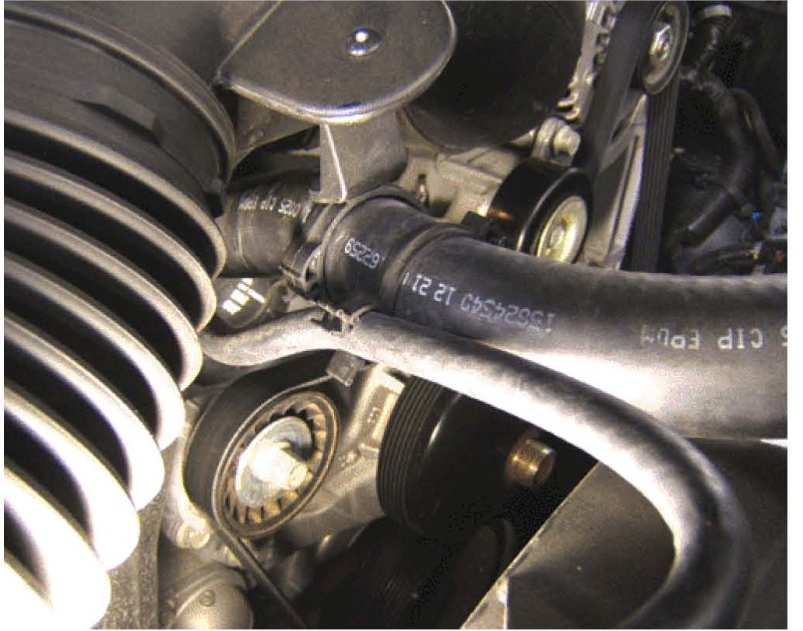
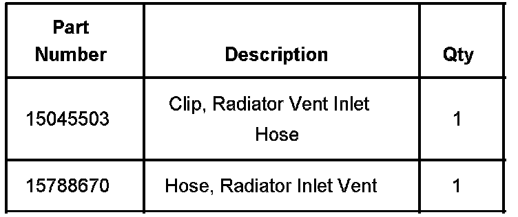
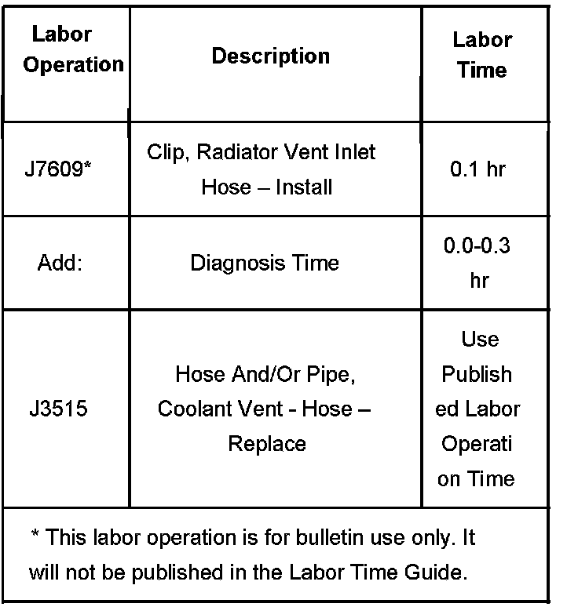

Cooling System - Overheat/Coolant Loss/Coolant Smell
Bulletin No.: 06-06-02-007Date: May 09, 2006
TECHNICAL
Subject:
LY2, LY5, LY6, LH6, L76, LMG, LC9, L92, Coolant or Rubber Type Odor, Loss of Engine Coolant and/or Overheat Condition (Add Second Clip to Upper Radiator Hose)
Models:
2007 Cadillac Escalade, Escalade ESV, Escalade EXT
2007 Chevrolet Avalanche, Suburban, Tahoe
2007 GMC Yukon, Yukon XL, Yukon Denali, Yukon Denali XL
with 4.8L, 5.3L, 6.0L or 6.2L VORTEC GEN IV V-8 Engine (VINs C, J, K, M, Y, 0, 3, 8 RPOs LY2, LY5, LY6, LH6, L76, LMG, LC9, L92)
with Active Fuel Management(TM) and E85 Flex Fuel
Condition
Some customers may comment on a coolant or rubber type odor. There may be a loss of coolant and/or overheat condition. Upon further investigation, the technician may find that the radiator vent inlet hose is close to the drive belt idler pulley.
Correction

1. If the radiator vent inlet hose is close to the drive belt idler pulley, add an additional clip in a new location. Refer to the above graphic illustration.

2. Add a second radiator vent inlet hose clip, P/N 15045503, to the upper radiator hose. Position the new clip approximately 31 mm (1 in) from the air cleaner resonator outlet duct assembly and secure the radiator vent inlet hose to the new clip. Refer to the above graphic illustration.
Important:
If the radiator vent inlet hose has to be replaced, Do Not use the old clamps and clips.
3. If the radiator vent inlet hose is close to the drive belt idler pulley and the hose shows wear marks and/or is cut by the drive belt idler pulley, replace the hose with P/N 15788670. Follow the repair procedure above to add a second radiator vent inlet hose clip in a new location. Refer to the Radiator Vent Inlet Hose Replacement procedure in SI.

Parts Information
Warranty Information

For vehicles repaired under warranty, use the table.

Disclaimer